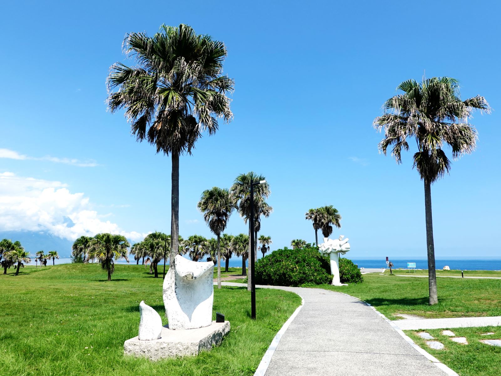
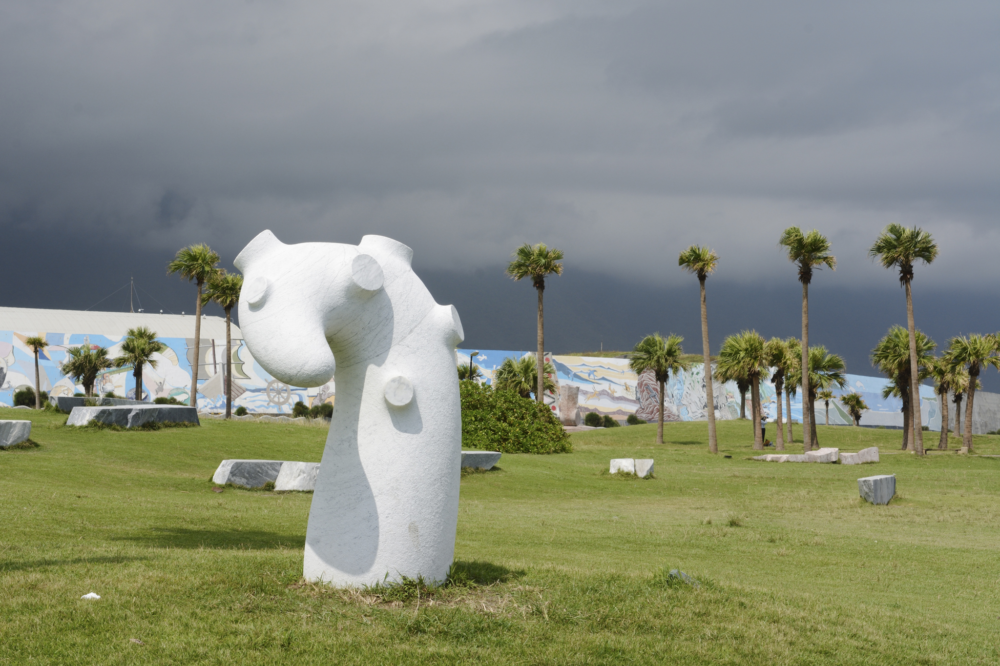
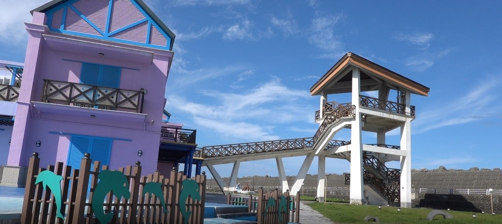
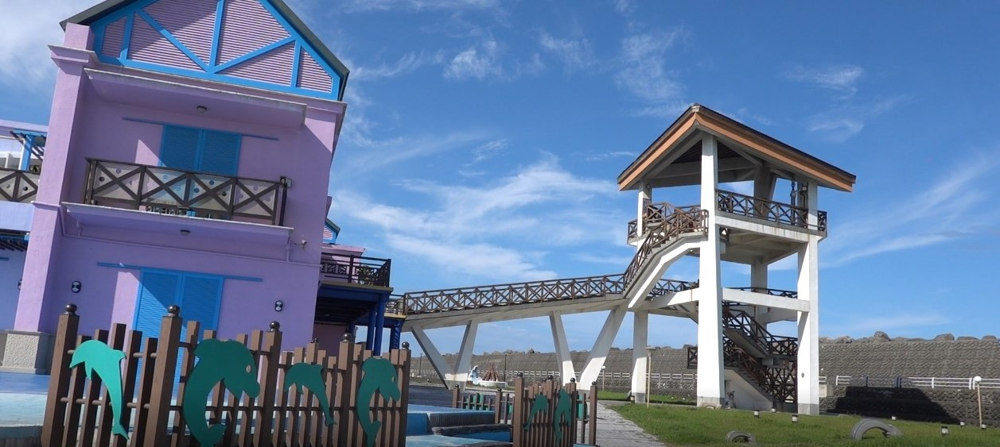

七星潭海岸風景特定區
七星潭是花蓮縣唯一的縣級風景區，又稱月牙灣。有斷層形成的海峽與優美的弧形海灣，具有豐富的自然人文景觀、海水潔淨湛藍，黑石晶瑩剔透，
在此可遠眺青山蒼鬱，公路綿延、風景區範圍從海邊延伸到七星潭社區。七星潭鄰近太魯閣國家公園、東海岸和花東縱谷國家風景區，在花蓮縣政府多年開發與維護之下，
七星潭已成為花蓮最佳風景區之一。在七星潭不僅可以遠眺清水斷崖，夜晚時分的新城和崇德地區燈火更是清晰可見，因此也是當地民眾看夜景、賞星辰的好去處。
七星潭風景區設有自行車道，利用自行車便可以將南濱公園、石雕博物館、賞星廣場等知名景點一路暢玩到底。
長達21公里的自行車旅途都能讓遊客有不一樣的視覺感受。另外，在漁場附近還有海生態的解說牌，利用防風林區闢建海濱植物園區，讓民眾除了欣賞景點之外，
更能增長知識。七星潭海邊的石雕公園，有著精美石雕作品，讓七星潭增添了不少藝術氣息。騎乘單車逆著風讓身體向前傾斜，感受東北季風的威力；或在安全的情況下，
遠遠地欣賞季風帶來的滔天巨浪，甚是壯觀好看。
開放時間：全日開放
地 址：花蓮縣新城鄉大漢村七星街32號
服務專線：+886-3-8249646


七星潭海岸風景特定區
向日廣場
座落於花蓮漁港，四周被太平洋、賞鯨碼頭、花蓮漁市場及花蓮區漁會所環抱，還有一座距離太平洋最近的高塔–太平洋愛之塔，寬廣的視野可以遠眺太平洋、海岸山脈、
中央山脈與花蓮港口的風景，幾乎整個賞鯨休閒碼頭都在範圍內，浪大的時候還可以看到打上防波堤壯觀景色、向日廣場以「海洋文化」為主軸，與國家海洋研究院、
賞鯨業者及在地職人攜手合作，串連綿延百公里的海岸線並打造太平洋廊道，北邊展區有藝術家陳聖文利用山林、海邊撿拾的廢棄物，以刺繡及編織技法，
創作一隻長10餘公尺的大鯨魚藝術品，不定期登場的市集，也讓旅客一邊逛著手作攤位，一邊伴隨著浪潮聲中，欣賞海洋藝術創作，讓景點融合海洋特色活耀起來。
向日廣場以繽紛色彩妝點，南歐小鎮變得更鮮豔，搭配漁港水面一起入鏡的彩色小屋，也顯得特別夢幻！除了3D壁畫、賞鯨豚的碼頭外，
廣場的絕佳位置還能天天迎接第一道曙光從太平洋升起。廣場上的建築呈現南歐風格，尖聳的屋頂與紅、黃、藍的房屋色彩映襯出地上拼接的五彩幾何圖形，
特殊的中西衝突，融合出悠閒的渡假氛圍。
開放時間：每日上午08:00-下午17:00
地 址：花蓮縣花蓮市港濱路35-1號
服務專線：+886-3-8230243
 
向日廣場

向日廣場